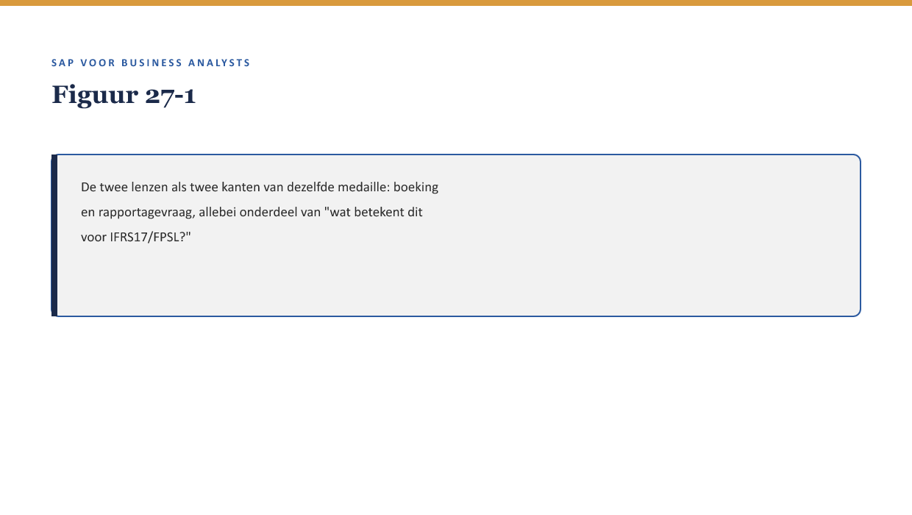
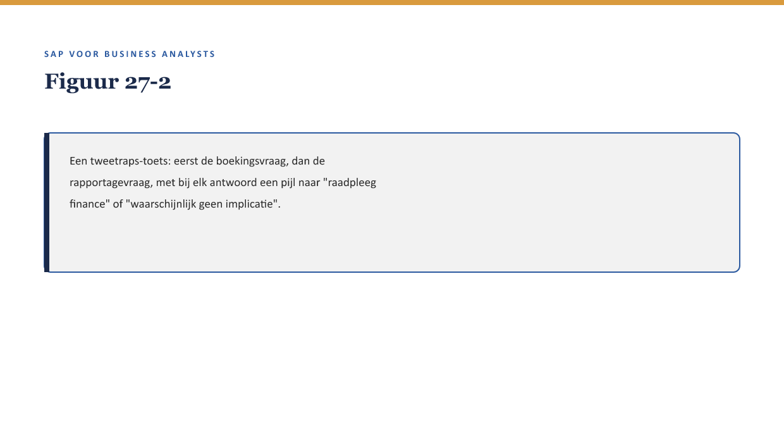

Deel 27 — IFRS17/FPSL: de samenvatting
Reader · Niveau 3 Expert · Cursus SAP voor Business Analysts · Ductus
Dit deel brengt de eerste lens (deel 15 §6) en de tweede lens (deel 21 §5) samen tot één bruikbaar geheel.
Leerdoelen
Na dit deel kun je:
- beide IFRS17/FPSL-lenzen (boeking en rapportagevraag) in samenhang toepassen op een nieuw scenario;
- uitleggen, zonder actuariële diepgang, wat IFRS17 in essentie meet: hoe de waarde van een verzekeringscontract over tijd wordt gemeten en gerapporteerd;
- beoordelen wanneer een procesbeslissing in FS-PM of FS-CM een IFRS17/FPSL-vraag verdient, en wanneer niet;
- een korte IFRS17/FPSL-toets uitvoeren als vast onderdeel van een fit-gap-analyse of requirement (↗ deel 9, niveau 1);
- de grens tussen “genoeg weten als BA” en “actuarieel specialistenwerk” scherp houden.
Studielast: één dagdeel klassikaal, circa drie uur zelfstudie.
1. Twee losse lenzen, één samenhangende vraag
Door de hele niveau 2 heen kwam de IFRS17/FPSL-lens twee keer terug: eerst als vraag over de boeking (deel 15 §6), later als vraag over de rapportagevraag (deel 21 §5). Willemien van Ballegooijen (certificerend actuaris, ↗ testcursus-dossier) brengt ze samen met haar vaste vraag: “Waartegen is dit vergeleken?” — dezelfde vraag die in de zustercursus het testvak droeg, nu toegepast op boekhouding.

2. Waarow dit voor de BA telt
Waarom dit voor de BA telt. Zonder samenvatting blijven de twee lenzen losse, half vergeten vragen. Dit deel maakt er één herbruikbare toets van, klaar om standaard mee te nemen in elke fit-gap-analyse — precies zoals de disclaimer-methode (deel 1) en de rolgrens (deel 1 §5.1) vaste, terugkerende toetsen zijn geworden.
3. Wat IFRS17 in essentie meet — zonder actuariële diepgang
IFRS17 vraagt van een verzekeraar dat de waarde van een verzekeringscontract niet als een simpele optelsom van premie-in en uitkering-uit wordt gerapporteerd, maar als een geschatte, over tijd verdeelde waarde — rekening houdend met verwachte toekomstige verplichtingen en risico’s. FPSL is SAP’s technische ondersteuning om die berekening en rapportage in het systeem te faciliteren.
Voor een BA is het niet nodig de berekeningsmethodiek te kennen. Wel relevant: elke gebeurtenis die de verwachte toekomstige waarde van een contract beïnvloedt (een nieuwe polis, een wijziging, een claim, een beëindiging) heeft mogelijk een IFRS17/FPSL-implicatie, ook als dat vanuit het procesperspectief niet meteen voor de hand ligt.
Kernzin — De grens die deze cursus hier trekt: een BA hoeft niet te weten hóe IFRS17 rekent, wel wánneer de vraag gesteld moet worden. Dat is dezelfde soort grens als bij ABAP lezen (deel 5) — herkennen, niet zelf uitvoeren.
4. De samengevoegde toets
Voor elke FS-PM- of FS-CM-gebeurtenis met mogelijke financiële betekenis, twee vragen na elkaar:
- Boekingsvraag (lens 1, deel 15 §6): “Verandert dit de boekingslogica — komt er een directe boeking, of iets dat via een periodieke afsluiting verwerkt wordt?”
- Rapportagevraag (lens 2, deel 21 §5): “Verandert dit wat finance of een toezichthouder-achtige rol wil zien — bijvoorbeeld de verwachte toekomstige waarde van deze polis?”

5. Wanneer wél, wanneer niet
Niet elke gebeurtenis verdient deze toets in volle diepte. Vuistregel: een BTX of claim die de premie, dekking, of waarde van de polis wijzigt verdient de toets; een BTX die alleen administratieve gegevens raakt (bijvoorbeeld een adreswijziging zonder premie-effect) doorgaans niet.
Kernzin — De toets is bedoeld om structureel te voorkomen wat bij de historische kortingsregel (deel 5, 12, 26) drie keer is gebeurd: iets dat relevant was, maar nergens systematisch werd bevraagd totdat iemand er toevallig tegenaan liep.
6. Wat blijft specialistenwerk
De precieze berekening, de actuariële aannames, en de definitieve rapportagevorm blijven het werk van finance en actuarissen. De BA-rol stopt bij het signaleren van de vraag — dezelfde grens als fraude-signalering (↗ deel 14 §5.2): de organisatievraag stellen, niet de uitvoeringsvraag beantwoorden.
7. Kruisverwijzingen
- ↗ Deel 15 §6, deel 21 §5: de twee losse lenzen die dit deel samenbrengt.
- ↗ Deel 5, 12, 26: de historische kortingsregel als terugkerend voorbeeld van “iets dat nergens systematisch werd bevraagd.”
- ↗ Deel 28: Wtp als Nederlandse toepassingslaag van vergelijkbare vraagstukken.
Kernbegrippen
IFRS17 (samenvattend) · FPSL · verwachte toekomstige waarde · tweetraps-toets (boeking + rapportagevraag)
Samenvatting in vijf zinnen
- Dit deel brengt de boekingslens (deel 15) en de rapportagevraag-lens (deel 21) samen tot één herbruikbare toets.
- IFRS17 meet de waarde van een verzekeringscontract over tijd, niet als simpele optelsom van premie en uitkering.
- Een BA hoeft niet te weten hóe IFRS17 rekent, wel wánneer de vraag gesteld moet worden.
- De tweetrapstoets (boeking + rapportagevraag) hoort standaard bij elke gebeurtenis die premie, dekking of polis-waarde raakt.
- De uitvoering blijft specialistenwerk — de BA-rol stopt bij signaleren, net als bij fraude-signalering.